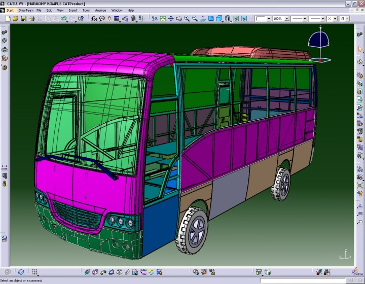
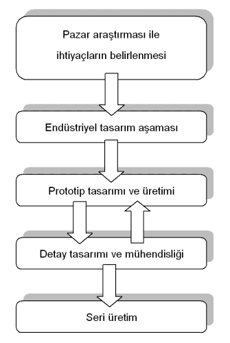

|
Sezer Cindemir
Mühendislik Müdürlüðü
ANADOLU ISUZU Otomotiv San. ve Tic. A.Þ.
Ekim 2005, Kocaeli
Not: Ýlk defa TurkCADCAM.net
Dergisi Ocak-Þubat 2006 Sayýsýnda yer almýþ bu yazý,
ek resimlerle birlikte Kasým 2008'de TurkCADCAM.net portalýndan yayýnlanmaya baþlamýþtýr.
Özet
Bir çok þirket için ürün geliþtirme süreci, piyasanýn ihtiyaç duyacaðý ve satýn alacaðý ürünü en kýsa sürede, en düþük maliyetle ve en yüksek kalitede pazara sürmek için üzerinde önemle durulan bir süreç olmuþtur. Bu süreçte bilgisayar destekli tasarým programlarý tasarýmcýlara süreci kýsaltma ve ürünün kalitesini arttýrma yönünden yardýmcý olmuþlar ve son 40 yýlda önemli geliþmeler kaydetmiþlerdir.

Ürün Geliþtirme
Ürün geliþtirme (Ür-Ge), pazar ihtiyaçlarýnýn belirlenmesi, üretilmesine karar verilen ürünün tasarýmýnýn yapýlmasý, prototip ve seri imalatýn yapýlmasý ve ürünün satýþýnýn yapýlmasýný içeren aktivitelerin tümünü kapsayan bir faaliyetler bütünüdür. Dolayýsýyla yeni bir ürünün tasarým aþamalarý yandaki gibi bir akýþ þemasý ile ifade edilebilir.
Bu faaliyetler bütünü içerisinde en önemli noktayý endüstriyel tasarýmdan yola çýkýlarak prototip ürünün tasarlanmasý oluþturmaktadýr. Keza geliþtirilmekte olan ürünün çalýþacaðý ortamda maruz kalacaðý titreþim, aþýnma, sýcaklýk, yorulma vb. etkenlere olan dayanýmý bu aþamadaki seçimlerle belirlenmektedir. Bir yandan ürünün fonksiyonunu yerine getirirken dayanýmýnýn maksimum olmasý istenirken diðer yandan aðýrlýk, hacim ve maliyet gibi faktörlerin tasarýmý zorlayacak kadar yüksek olmamasý ve pazarda rekabet edecek ölçülerde olmasý istenmektedir. Bunun yaný sýra ürün estetik olarak ön plana çýkacak ise ürünün hitap edeceði pazar tarafýndan beðenilmesi de ürün geliþtirme sürecinin çok önemli bir aþamasýdýr.
Bu nedenlerle prototip tasarýmý ve üretimi aþamasýnda deðiþik özellikleri ön plana çýkan bir çok alternatif deðerlendirilmekte ve bu alternatifler arasýnda seçim yapýlmaktadýr. Ürünün fiziksel þekli, aðýrlýðý, kinematik davranýþý, montaj özellikleri ve toleranslarý bu seçimi etkileyen parametrelerden sadece bir kaç tanesidir.
Ürünün büyüklüðüne de baðlý olarak fiziksel prototip üretimi ve çeþitli fiziksel prototiplerin birbiri ile mukayese edilerek aralarýndan en uygununun seçilmesi pazara ürünü rakiplerine oranla daha erken piyasaya sunmanýn çok önemli olduðu günümüzde hem çok fazla zaman almakta hem de maliyet olarak geliþtirme süreci çok külfetli olmaktadýr. Keza ürün geliþtirme maliyetlerinin %80-90'ýný prototip ve detay mühendislik çalýþmalarý oluþturmaktadýr.
Diðer yandan ürün geliþtirme sürecinde gerçekleþtirilen fiziksel prototipler ile üretilecek ürüne ait bütün parametrelerin (Yorulma ömrü, dinamik davranýþ, aðýrlýk - hacim iliþkisi, kinematik özellikler vb..) çoðu zaman elde edilmesi mümkün olmamaktadýr. Bu nedenle salt fiziksel prototip yapýmý iþleminin ürün geliþtirme süreci içerisinde çeþitli yardýmcý metotlar kullanýlarak desteklenmesi ihtiyacý doðmuþtur. Bu ihtiyaç özellikle 20. yüzyýlýn ikinci yarýsýnda mikro iþlemciler ile hýzlý bir geliþim gösteren bilgisayar endüstrisi ve bilgisayar destekli tasarým (CAD) sistemleri ile karþýlanmýþtýr.
Bilgisayar Destekli Tasarým
Bilgisayar destekli tasarým sistemleri ile ilgili ilk çalýþmalar 1950'li yýllarýn sonunda ABD Hava kuvvetleri için Massachusetts Institute of Technology (MIT)'de baþladý. 1960'lý yýllarda bilgisayar destekli tasarým teknolojisini kendi ürün geliþtirme süreçlerine adapte eden ilk endüstri otomotiv endüstrisi olmuþtu. Bu yýllarda öncelikle iki boyutlu teknik resimler teknik resim masalarýndan bilgisayar ekranlarýna taþýnarak iki boyutlu tasarým iþleminin bilgisayarda yapýlmasý iþlemi gerçekleþmiþtir. Takiben 1970'li yýllarýn sonuna doðru üç boyutlu modelleme ile ürünlerin üç boyutta modellenmesi ve bu ürünlerin birbirine monte edilmesi ile üç boyutlu ürün geliþtirme kavramý ortaya çýkmýþtýr.
Üç boyutlu modellerin kullanýlmasý yoluyla karmaþýk geometriye sahip geometrilerin bilgisayarda gerilme analizlerinin yapýlabilmesi (Bilgisayar Destekli Mühendislik - Computer Aided Engineering, CAE) yine 1970'li yýllarýn sonu ve 1980'li yýllarýn baþlarýnda olmuþtur. Bu süreci 1990'lý yýllarýn sonlarýna doðru oluþturulan üç boyutlu montaj modellerinin ürünün kinematik ve dinamik analizlerinin yapýlmasý amacý ile kullanýlmasý takip etmiþtir.
Bu noktada yaklaþýk 40 yýlý bulan bir süreç sonucu otomotiv endüstrisi iki boyutlu teknik resim masasýndan ürünün sanal ortamda oluþturulmasý ve çok çeþitli analizlerinin bilgisayar ortamýnda yapýlmasý suretiyle sanal olarak ürün geliþtirme kabiliyetine sahip olmuþtur.
|